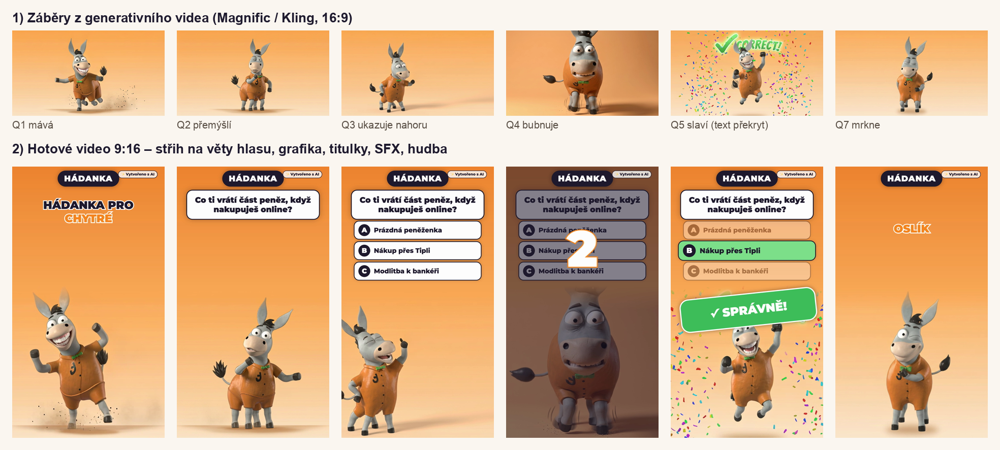
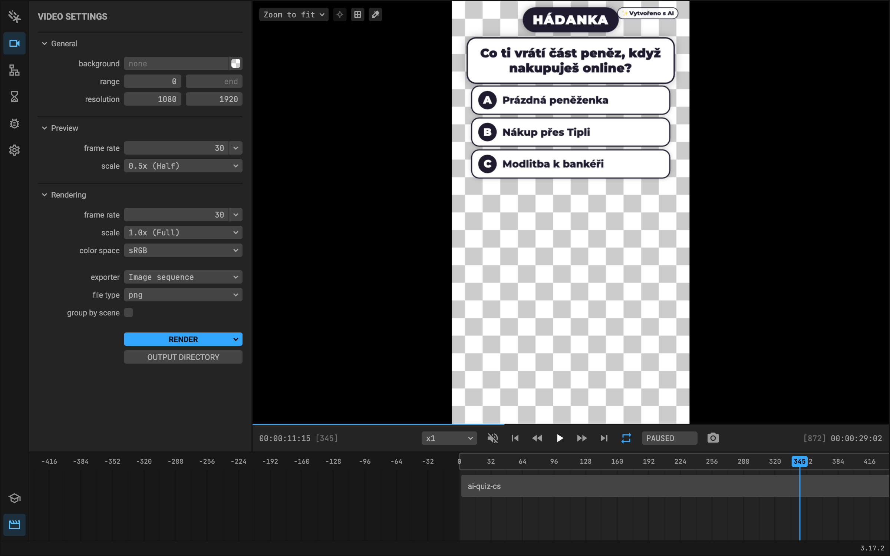
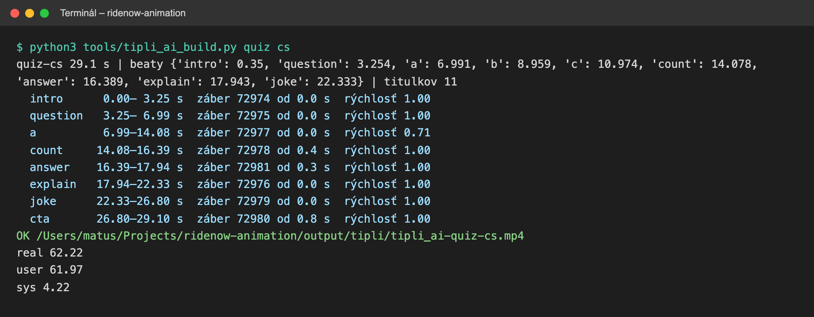
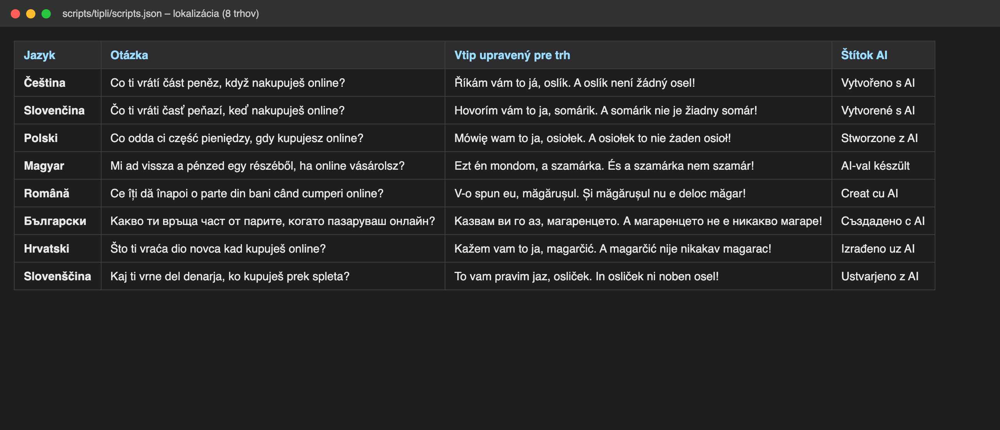
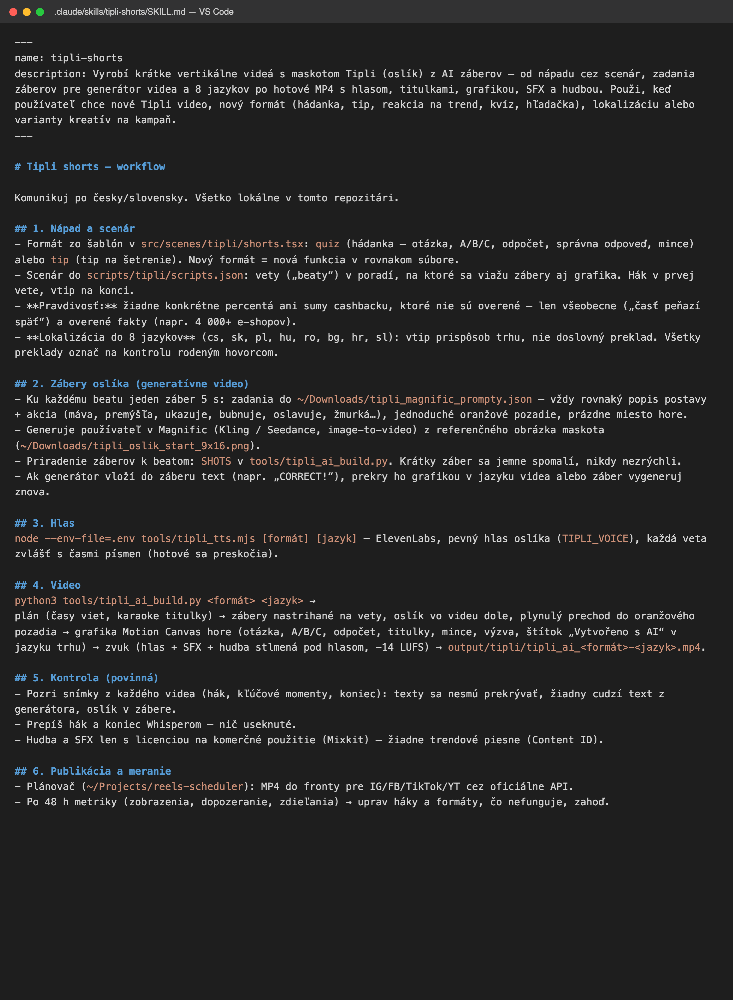

AI workflow pro krátká videa s oslíkem
Matúš Kačmár · vyrobeno narychlo, za jeden večer – jako důkaz, že workflow funguje od nápadu po hotové video
Formát „Hádanka“
29sekundový short: oslík položí otázku, ukáže možnosti A/B/C, odpočítá 3‑2‑1, správná odpověď se rozsvítí a na konci přijde vtip a výzva tipli.cz.
- Záběry oslíka – generativní video (Magnific / Kling, image‑to‑video z obrázku maskota), každý záběr pro jednu větu scénáře.
- Hlas – ElevenLabs, jeden stálý hlas postavy, každá věta zvlášť s časy písmen.
- Grafika v kódu – otázka, možnosti, odpočet, karaoke titulky, mince, CTA a štítek „Vytvořeno s AI“ (Motion Canvas – stejný princip jako Remotion).
- Zvuk – SFX a hudba s licencí na komerční použití, hudba se ztiší pod hlasem, -14 LUFS.
- Střih – automaticky na věty hlasu; text, který generátor sám vložil do záběru („CORRECT!“), je překrytý textem v jazyce videa.
Jeden příkaz → 62 s výroby → hotové MP4 1080×1920.
Jak workflow funguje
Nápad a scénář
Claude Code se skillem tipli-shorts navrhne scénář podle šablony formátu. Krátké věty, hák na začátku, pointa na konci.
Claude Code · skill · JSON scénář
Lokalizace do 8 jazyků
CZ, SK, PL, HU, RO, BG, HR, SL – vtip upravený pro každý trh (slovní hříčka „oslík není žádný osel“ funguje v každém jazyce jinak). Kontrola rodilými mluvčími.
Claude · tabulka překladů
Záběry postavy
Zadání záběrů s jednotným popisem maskota → generativní video. Konzistentní vzhled, povaha a opakované situace.
Magnific (Kling / Seedance) · Gemini
Hlas
Stálý hlas oslíka, časy každého slova → přesné načasování grafiky a titulků v každém jazyce.
ElevenLabs API
Střih a grafika
Šablona v kódu: záběry na věty, karty, odpočet, karaoke titulky, přechody, SFX, hudba, CTA, štítek AI.
Motion Canvas / Remotion · ffmpeg · Whisper
Kontrola
Automatické snímky z klíčových momentů, přepis začátku a konce (nic useknutého), žádný cizí text z generátoru, práva k hudbě.
Whisper · kontrolní skript
Publikace
Vlastní plánovač přes oficiální API (IG, FB, TikTok, YouTube) a AI agent v Claude Desktop, který přes Chrome obsluhuje YouTube Studio, TikTok Studio a Meta Business Suite.
reels-scheduler · Claude in Chrome
Měření a ladění (další krok)
Imprese, dokoukání a sdílení ze Studií do tabulky, týdenní vyhodnocení agentem → co upravit, co zahodit.
Studio analytika · tabulka · Claude
Od AI záběrů k hotovému videu





Co už běží v praxi
Stejné nástroje denně používám pro klienty – za poslední týden přes 60 shortů z dlouhých rozhovorů a podcastů:
- výběr nejsilnějších pasáží z přepisu, silný hák na začátek, čisté konce (kontrola podle zvuku),
- střih na výšku s motion control (kamera sleduje obličej), dělená obrazovka u dvou mluvčích,
- karaoke titulky, emoji, B‑roll, výřezy osob, animované karty s čísly, loga, přechody, SFX, hudba, CTA,
- reakce na videa v rámečku iPhonu s původním zvukem,
- plánování a publikace na IG, FB, TikTok a YouTube.
Jak bych to postavil u vás
- Bible oslíka: vzhled, hlas, povaha, opakované situace a hlášky – aby každé video bylo „on“.
- Knihovna šablon: vtip, reakce na trend, kvíz, hledačka, hádanka – nový díl za minuty, ne za dny.
- 8 trhů najednou: dabing, titulky a vtip pro každý trh, kontrola rodilými mluvčími.
- Výkonnostní kreativy: varianty háku, délky a CTA pro Meta a TikTok, testování a rychlé zahození toho, co nefunguje.
- Pravidla: pravdivé informace o cashbacku, označení AI obsahu, jen hudba a vizuály s licencí.